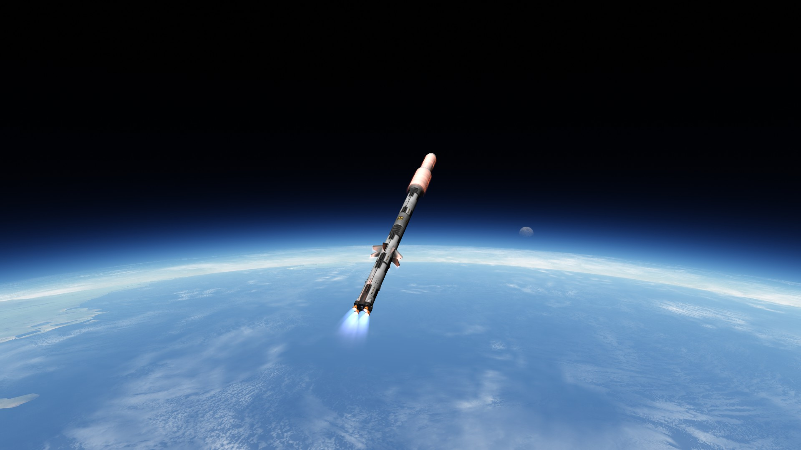
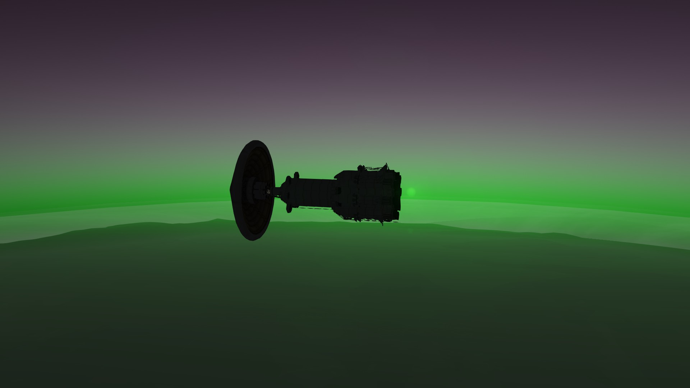
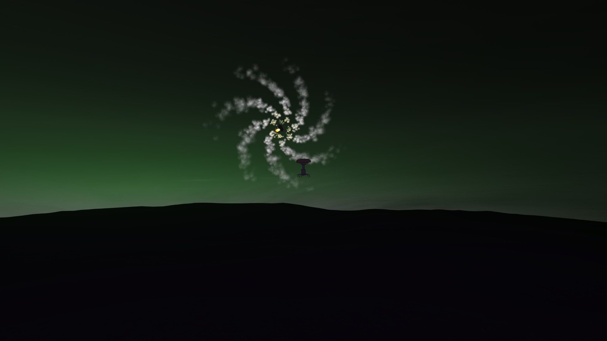
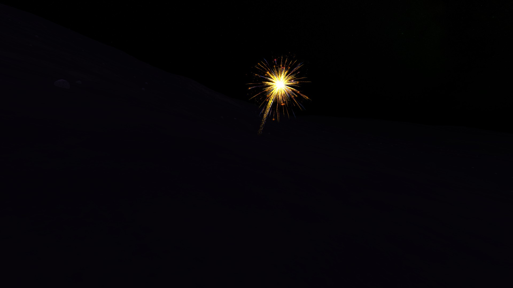
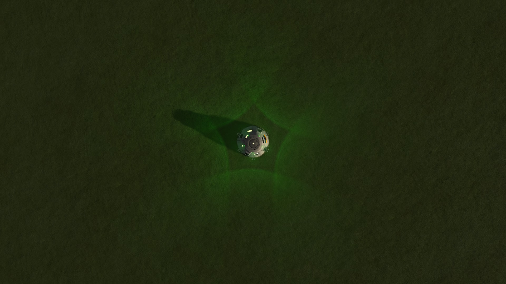

<





VULCAN IX GALLERY
Vulcan IX was the final mission amongst 9 Vulcan missions. The Vulcan missions existed in order to put the first humans on the surface of Eve (Kerbal analog to Venus). The mission was separated into two rockets. The first rocket was the Tetrum-P5 which was a big rocket designed to send a lander stage all the way to Eve which could go to orbit. It's etymology is split in two parts, that being Tetrum meaning offensive which consequently means crossing boundaries, and P5 which honored the 5 astronauts whose names coincidentally started with P, those being Phodred Kerman Sr., Phoner Kerman Sr., Phodred Kerman Jr., Phoner Kerman Jr., and Pyongyang Kerman. The pilot of the Tetrum-P5 would be Phodred Kerman III, grandson of Phodred Kerman Sr. and son of Phodred Kerman Jr. The other rocket was named the Vindicta-P5, Vindicta meaning vengeance. It served as a transfer stage for Tetrum-P5 to dock to and undock for Phodred Kerman III to enter it and would come back to Earth. Going to Eve is considered as the hardest mission on the entire game, and it would practically be a test of whether or not one is pretending to be an aerospace engineer, which I definitely passed (no glaze).